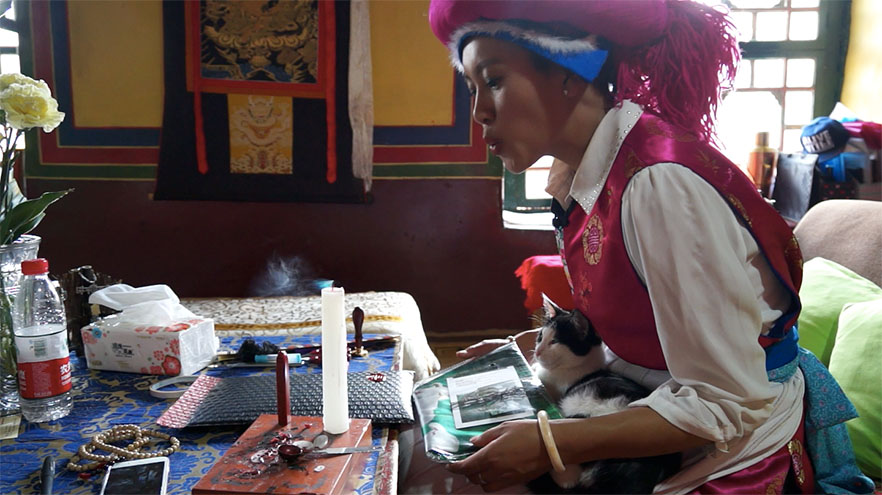

While Tibetan gifts and souvenirs are widely popular, few realize that most are actually produced in other parts of China or Nepal, with many lacking authentic Tibetan elements. Tsering Dolma, a Tibetan girl from south China’s Yunnan Province is hoping to change all that with a startup in Tibet Autonomous Region’s capital, Lhasa.
Although born Tibetan, Dolma was raised outside the autonomous region, and still faces culture shock doing business in Lhasa. So what has driven her to head back to Tibet, and what challenges does she face there?
PROMOTING TIBETAN CULTURE
Dolma’s studio sits in an ancient Tibetan courtyard, close to the famous Jokhang Temple. Thousands of pilgrims pass the square every day to follow their beliefs. For Dolma, the spiritual aspects of the place are part of the reason to stay.
Naming the brand Jiangbai, which means red and white in Chinese and stands for the color of Tibet’s renowned Potala Palace, Drolma recalls how her oldest childhood memories were wrapped in the place. She says that designing authentic Tibetan-inspired gifts is the best way she can share her heritage with the world.
“We need unique designs with Tibetan elements, and I know practical products are more attractive for customers,” says Dolma. Lifestyle products, including umbrellas, scarves and fridge magnets are the top selling Jiangbai items.
Lifestyle products, including umbrellas, scarves and fridge magnets are the top selling Jiangbai items.
“Tourism souvenirs in Tibet lack cultural attributes and most are designed and produced in Nepal or other parts of China.” —— Tsering Dolma
REAL TIBET
Having worked in the travel industry for more than six years, Dolma knows how cheaply made souvenirs can competitively bring in big profits. Many inferior Tibetan items, such as jewelry or Tangka are sold at high prices
to unaware customers. Instead of diving into these waters, Drolma chose to design a range of practical products, linking tradition with modern living.
Drolma chose to design a range of practical products, linking Tibetan tradition with modern living.
Majoring in tourism at Yunnan Minzu University, Dolma became a civil servant, fulfilling her parent’s expectations. The desire to see the outside world pushed her to make the first bold move to Beijing in 2012. But after working for two years at a travel company that organized trips to Tibet, she began to feel frustrated at being so far from her sacred land.
“I was concentrating on providing good service to customers, but didn’t really have the chance and energy to purely enjoy Lhasa.” With this in mind, Dolma decided to quit her job and settle down in her home city to experience it properly. There she managed to utilize all her experiences in tourism into her own business.
Tsering Dolma is making stamp for the package of Jiangbai’s products.
BARRIERS TO A DREAM
Born in Shangri-La, Yunnan Province，Drolma’s dialect is actually very different from the native Tibetan language. “Language is the means to integrate into a city, so it was also the first challenge presented.”
Dolma recalls one of her failed attempts at business in Tibet. “I was ordering my first design series -- Tibetan style boots, but the factory gave me cheap and fake materials after a month of communication.” The man in charge afterwards ignored her queries and teased her as an outsider.

Naming the brand Jiangbai, which means red and white in Chinese and stands for the color of Tibet’s renowned Potala Palace, Drolma recalls how her oldest childhood memories were wrapped in the place.
After visiting several travel trade fairs in Beijing, Guangzhou and Shanghai, Dolma realized that the manufacturing industry in Tibet couldn’t meet the needs of modern business. She turned to manufacturing factories in Shenzhen and received positive results. The result pushed her to let go of the idea of having everything done in Tibet, “We need a mature manufacturing industry to keep up with normal business in the modern world.”
Normal people on the Barkhor Street are part of the inspiration of Dolma’s design.
Dolma and an accountant are the only two full-time staff members in the company, with a part-time design team in Beijing and contributing culture experts from time to time.
In the long run, the brand aims to cooperate with artists and promote traditional handicraft in Tibet. And for Dolma, the drifting journey on her gift business in Tibet is really just a start.